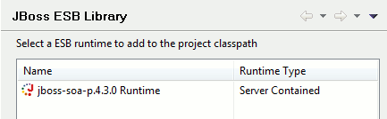
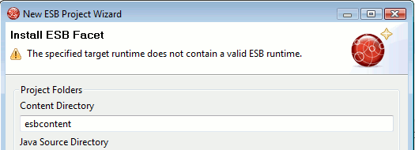

General
|
| Reference guide |
There is now a reference guide for the ESB functionallity.
|
Projects
|
| "Finger touch" now for ESB projects |
The "Finger" touches descriptors dependent on project
(i.e. web.xml for WAR, application.xml for EAR) and now it also
touches jboss-esb.xml for ESB projects. This allows for a quick
restart of just the project without having to restart server.
|
|
| ESB classpath container |
The classpath container for ESB projects is now configurable allowing you to more easily change ESB runtime for a project.
Furthermore the classpath container now also allow modification of source and JavaDoc location.

|
|
| "Run/Debug" a ESB project |
The Run On and Debug On actions now work on ESB projects causing a (re)deploy for a user designated server.
|
|
| "Missing runtime" warning |
If server runtime does not contain ESB runtime jars the project wizard now shows a warning to inform the user that
the required runtime functionallity.

|